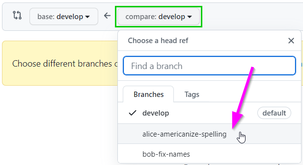
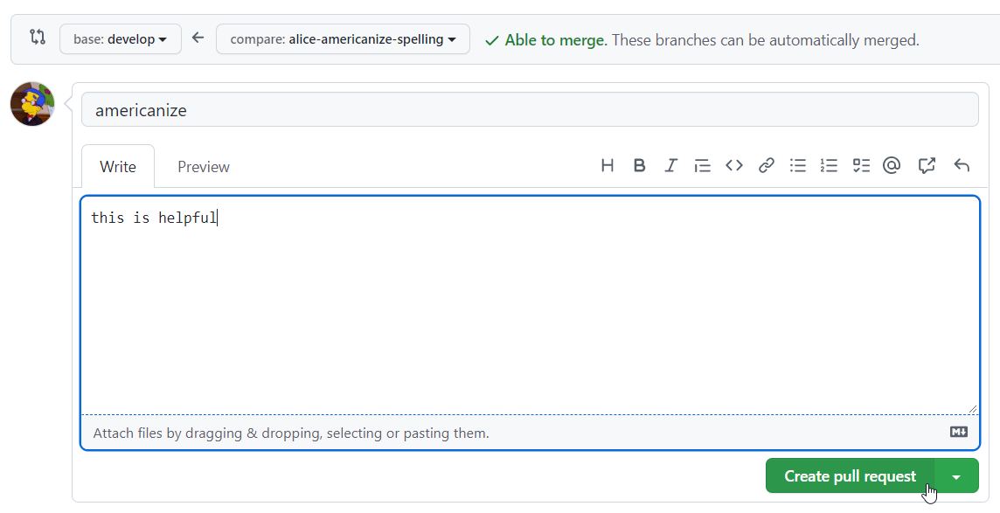
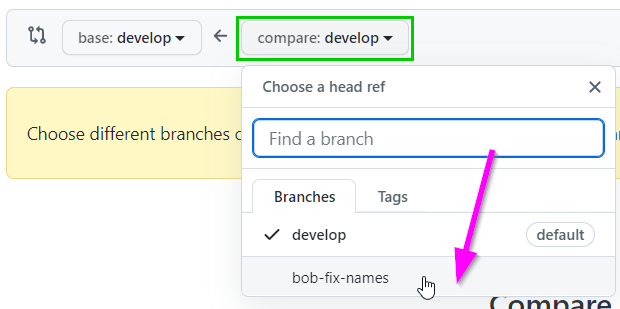

Git - Merge Changes
Merging changes is one of the most crucial aspects of collaborating on a git project. When multiple developers are working on the same codebase simultaneously, it can be difficult to keep things running smoothly. This demonstration simulates a merge conflict, and shows how it is possible to resolve issues of this nature.
The Starter Repository
For this example, we begin with a repository that has some "bugs" to fix. For the sake of simplicity, these bugs will be semantic/spelling mistakes within a block of text. These errors are all within a file named Frankenstein.md, which contains the first few paragraphs of Mary Shelley's Frankenstein.
Here are the errors, grouped into three distinct categories:
1. British Spellings
- "splendour" should be "splendor"
- "tranquillise" should be "tranquilize"
- "favourite" should be "favorite"
2. Name Mistakes
- "Maggie" should be "Margaret"
- "Bart" should be "Homer"
3. Spelling Errors
- "rejoce" should be "rejoice"
- "abtain" should be "obtain"
- "affusions" should be "effusions"
Importing the Repository
To create a working copy of the merge-demo-start repository, it will be necessary to import it. Follow these steps:
- Click here to go to GitHub
- In the upper right, click on the "+" dropdown and select "Import repository"

- On the next page, paste in the merge-demo-start URL for "Your old repository's clone URL"
- Enter merge-demo for the Repository Name
- Click the "Begin import" button

- Wait for the import to complete
- Once the import is done, click the link to your new repository!

Fixing the Errors in a Branch
Now, imagine there are a team of people dedicated to this project. Each individual is assigned one group of errors to fix, and they do this using feature branches. Let's call one of these people Alice, and another one Bob. Alice will work on Americanizing the text, and Bob will work on the name mistakes.
All of these steps can be completed either on a local clone of the repository, or on the web through GitHub.com. Visual Studio Code is recommended. If a local clone is to be used, begin by cloning the repository locally (these instructions may be helpful). Note that it is possible to open a new terminal in VS Code via the "Terminal" menu.
- On the merge-demo repository on GitHub, create a new branch named
alice-americanize-spelling- This is where Alice will do her work
- Command Line:
git checkout -b alice-americanize-spelling - VS Code: click current branch in lower left, enter new branch name
- On the new branch, open the Frankenstein.md file for editing
- Fix the three British spelling mistakes, and commit the changes
- Command Line:
git add .,git commit -m "american spellings",git push - VS Code: click Source Control icon on the left menu, stage changes, commit changes, publish branch
- Command Line:
- On the merge-demo repository, switch back to the
developbranch- Command Line:
git checkout develop - click current branch in lower left, select
develop
- Command Line:
- There, create another new branch named
bob-fix-names- This is where Bob will do his work
- Command Line:
git checkout -b bob-fix-names - VS Code: click current branch in lower left, enter new branch name
- On the new branch, open the Frankenstein.md file for editing
- Fix the two name mistakes, and commit the changes
- Command Line:
git add .,git commit -m "new names",git push - VS Code: click Source Control icon on the left menu, stage changes, commit changes, push changes
- Command Line:
Now there are two branches, each containing some of the necessary bug fixes. The goal is to get both sets of changes into the develop branch, WITHOUT them interfering with each other.
Note: this example may seem contrived, but remember it is simply for demonstration purposes. In a real project, the changes would likely be much more complex.
Merging Alice's Branch
The first part should be fairly straightforward - since both feature branches were directly copied from develop, and there are no additional changes to develop, there should be no conflicts with the first merge. Start with the alice-americanize-spelling branch.
Merging the branch via pull request will take place via GitHub.com.
- Go to the "Pull requests" tab at the top of the page

- Click on "New pull request"

- For the "base" branch, keep
develop - For the "compare" branch, select
alice-americanize-spelling
 - Check out the changes and click the "Create pull request" button
- On the next page, click the "Create pull request" button
 - On the next page, click the "Merge pull request" button

- Note: in the real world, pull requests should be reviewed by a team before merging
- Click the "Confirm merge" button to merge the changes into
develop

- Click the "Delete branch" button to delete the
alice-americanize-spellingbranch

Go back to the Code tab, and on the develop branch, check out the Frankenstein.md files. All the spellings should be Americanized - the changes from Alice's feature branch should be there!
Creating a Pull Request for Bob's Branch
So Alice has successfully merged her changes into the develop branch, but Bob's are still isolated in his branch. He needs a Pull Request to get those changes into the codebase! This is doable via GitHub; it will be very similar to creating the Pull Request for Alice.
- Go to the "Pull requests" tab at the top of the page
- Click on "New pull request"
- For the "base" branch, keep
develop - For the "compare" branch, select
bob-fix-names
 - Check out the changes and click the "Create pull request" button
- On the next page, click the "Create pull request" button

Here, the problem becomes apparent: Bob's branch has conflicts with the develop branch! His changes cannot be merged into the codebase without dealing with these merge conflicts.
Merging develop into bob-fix-names
In order to merge Bob's changes into the develop branch, it will first be necessary to merge the latest version of develop into bob-fix-names.
- Open up the local clone of the repository in VS Code
- Make sure to be on the
developbranch- Command Line:
git checkout develop - VS Code: click current branch in lower left, select
develop
- Command Line:
- Pull the latest changes from the server
- Command Line:
git pull - VS Code: click Source Control icon on the left menu, three dots, Pull
- Command Line:
- Switch to the
bob-fix-namesbranch- Command Line:
git checkout bob-fix-names - VS Code: click current branch in lower left, select
bob-fix-names
- Command Line:
- Open the Frankenstein.md file for editing
- Make sure the name fixes are still there
- The Americanized spelling fixes should not be there
- Attempt to merge in the
developbranch by enteringgit merge develop- An error should appear, saying that there are merge conflicts
- Open up the Frankenstein.md file to see the merge conflict
This is the hard part; it will be necessary to go into the Frankenstein.md file, and figure out how the conflicting changes merge together.
Dealing with the Conflict
The syntax for merge conflicts is a little weird, but it basically shows you the change coming from one side compared to the change coming from the other side.
Under <<<<<<< HEAD is the text as it currently is on the present branch. In the case of the bob-fix-names branch, it has properly swapped "Maggie" out for "Margaret", but it still has the British spelling of "splendour."
The ======= separates the two versions, with one being above and one being below.
The >>>>>>> develop indicates the end of the second version of the text. In the case of the develop branch, it has the old name "Maggie," but it has the fix for "splendor."
The goal, then, is to take the good parts of each version, mash them together into one final version, and get rid of the <<<<<<< HEAD, =======, >>>>>>> develop, and old versions. Ultimately, the fix should replace this:
<<<<<<< HEAD
There, Margaret, the sun is for ever visible, its broad disk just skirting the horizon and diffusing a perpetual splendour.
=======
There, Maggie, the sun is for ever visible, its broad disk just skirting the horizon and diffusing a perpetual splendor.
>>>>>>> develop
with this:
There, Margaret, the sun is for ever visible, its broad disk just skirting the horizon and diffusing a perpetual splendor.
Essentially, in this case, it will make sense to accept both changes; the one from the develop branch (originating from Alice) and the one from the bob-fix-names branch (originating from Bob).
Note: in a real project, it may not be so clear cut; some additional work may be required to make sure all the code works together.
Consolidate the changes using VS Code:
- Click the Source Control icon on the left to open the Source Control pane
- Click the Frankenstein.md file to see the "Merge Changes"
- For the conflict, select both the left change and the right change
- Notice that in the pane underneath, the "Result" includes both the correct name ("Margaret") and the correct American spelling ("splendor").
- Click the "Accept Merge" button to complete the merge

Pushing Up the Resolution
Once the merge conflict has been resolved, it's time to push it up.
- Make sure the Frankenstein.md file is saved
- In the Source Control pane, click the "Commit" button
- After that, click the "Sync Changes" button that should appear
- Go to GitHub and check on the
bob-fix-namesbranch in the merge-demo repository- It should now be 2 commits ahead of
develop, and no commits behind!
- It should now be 2 commits ahead of
Merging Bob's Pull Request
Now the Pull Request should be ready for merging!
- On GitHub, click on the "Pull requests" tab
- Click on Bob's Pull Request
- Click the "Merge pull request" button, then the "Confirm merge" button
- Finally, click the "Delete branch" button
Head back to the main repository page - there should only be the develop branch, and all changes from Alice and Bob should be in the Frankenstein.md file!
OPTIONAL: Fixing the Additional Errors
There are still some bugs in the Frankenstein.md file! For some added practice, fix the additional spelling errors by following the proper process.
- On the merge-demo repository in GitHub, create a new branch named
fix-spelling - Make the changes to the Frankenstein.md file on the new branch
- Create a pull request from the
fix-spellingbranch into thedevelopbranch - Merge in the changes!